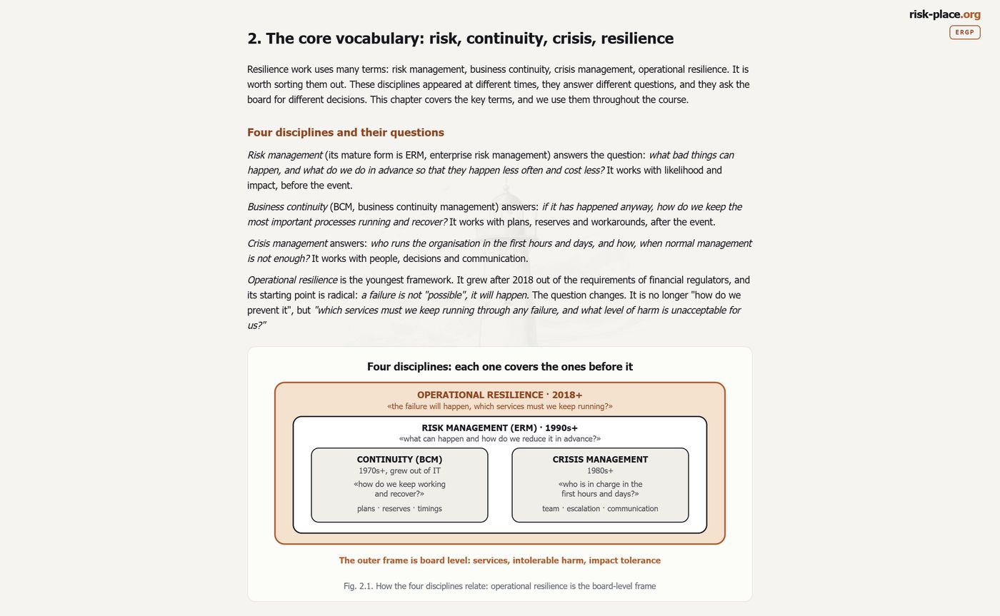

Онлайн-курс и сертификация по управлению устойчивостью бизнеса — от аппетита к риску на уровне совета директоров до отчета аудитора.
После оплаты письмо с входом в программу придет на вашу почту в течение 24 часов. Email вы укажете на странице оплаты.
Каждый модуль завершается тестом и рабочим артефактом, который остается у вас.
Как устроено управление устойчивостью на верхнем уровне компании. Разбираем аппетит к риску прерываний и порядок его утверждения советом директоров, архитектуру комитетов и делегирование полномочий. Отдельные главы — три линии защиты и роль директора по рискам.
Связываем системное управление рисками с непрерывностью бизнеса. В основе — ISO 31000 и реестр рисков, ключевые индикаторы риска и раннее предупреждение, сценарный анализ и стресс-тесты. Отдельный блок — использование ИИ для мониторинга рисков.
Переводим устойчивость на язык денег. Проводим анализ воздействия на бизнес (BIA), выставляем целевые показатели восстановления — максимально допустимый простой, целевое время и целевую точку восстановления (RTO/RPO). Считаем стоимость дня простоя и строим инвестиционное обоснование мер.
Что делать, когда риск все-таки сработал. Кризисный штаб и эскалация, коммуникации в кризис, принятие решений под давлением. Отдельный блок — программа учений и отчеты по ним.
ISO 22301 в глубину, включая российский профиль ГОСТ Р ИСО 22301. Международный слой — DORA (ЕС), режим операционной устойчивости Банка Англии, требования регуляторов Залива. Главный навык модуля — закрывать несколько наборов требований одной системой.
Как показать руководству и аудитору, что система работает. Панель показателей устойчивости, отчет для совета директоров, готовность к аудиту. Завершает модуль модель зрелости.
Финал программы — итоговая работа. Вы готовите отчет об устойчивости своей организации объемом 3-5 страниц и разбираете его с экспертом на онлайн-встрече.
Итог программы — именной номерной сертификат ERGP (Enterprise Resilience Governance Professional).

Именной номерной сертификат ERGP. Показан образец.
Публичный реестр запускается с первой группой участников. Чтобы проверить сертификат сегодня, напишите на info@risk-place.ru — отвечаем в тот же день.
Это не рекламные картинки, а настоящие главы программы — ровно так их видит участник: авторский текст, схемы и вопросы для самопроверки.
Главы на скриншотах показаны в английской редакции. Программа полностью доступна и в русской редакции — весь текст, тесты и итоговая работа.

Нажмите на скриншот, чтобы увеличить.
Скриншоты выше — статичные. За 20 минут по Zoom покажем программу ERGP вживую и ответим на ваши вопросы. На демонстрации вы увидите:
После оплаты письмо с входом в программу придет на вашу почту в течение 24 часов — email вы укажете на странице оплаты.
Возможна оплата по счету — напишите нам на info@risk-place.ru, пришлем счет для оплаты от юрлица.
Групповой доступ для команды — формат и условия обсуждаются отдельно.
ERGP — Enterprise Resilience Governance Professional, онлайн-курс и сертификация по управлению устойчивостью бизнеса. Название международное, потому что программа издается на трех языках и выходит также для международного рынка.
Вы проходите программу ERGP в своем темпе, старт в любой день. Доступ к материалам открыт 6 месяцев с даты оплаты — этого хватает с запасом, чтобы пройти все шесть модулей, ответить на вопросы самопроверки и вернуться к нужным главам перед итоговой работой.
Именной сертификат ERGP с уникальным номером — сертификат risk-place о прохождении программы, это не государственный документ. Его ценность — в проверке знаний, которая за ним стоит: шесть тестов и разбор итоговой работы. Подлинность проверяется по номеру.
Это системная программа с проверкой знаний, а не запись лекций: после каждой части — самопроверка, после каждого модуля — тест, в конце — итоговая работа с разбором на онлайн-встрече.
Да, есть групповой доступ для команды. Напишите нам — обсудим формат и условия.
По счету. Напишите на info@risk-place.ru — пришлем счет для оплаты от организации.
Русский, английский и арабский. Курс ERGP создавался для международного рынка и издается также для стран Залива. Международная версия — risk-place.org.

Пятнадцать лет во главе риск-функций крупных компаний. В «Норникеле» построил непрерывность бизнеса с нуля — более 20 планов непрерывности. Директор по рискам нефтехимического мегапроекта стоимостью 20 млрд долларов (АГХК, СИБУР) с более чем 200 индикаторами строительных рисков. Риск-консалтинг в Ernst & Young, риск-менеджмент в «Билайн» и «Роснефти». Заместитель председателя технического комитета 010 «Менеджмент риска» Росстандарта. Подготовил более 300 специалистов.